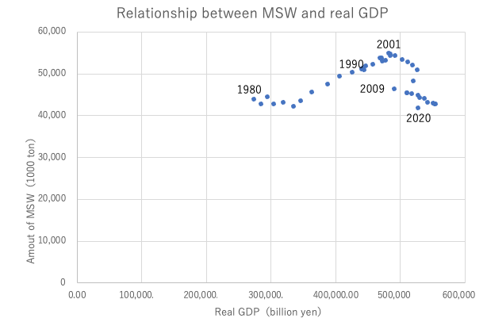

Is decoupling successful for municipal solid waste in Japan?
10/14 2022
Author: Eiji B. Hosoda
According to the principle of the waste hierarchy, priority is given to the avoidance of waste generation. Waste reduction comes first, followed by reuse, recycling, incineration and landfill. This principle is widely shared among advanced countries, being coupled with the concept of extended producer responsibility. However, it is easier said than done.
The principle is a core element of a circular economy, in which input of natural resources and generation of waste is minimized while value added is maximized, subject to certain economic and social constraints. Then, the fundamental question is whether we can successfully reduce the amount of waste, on the one hand, keeping economic growth on the other. In other words, it must be asked whether and how the decoupling of waste generation from economic growth can be made.
The following figure shows the relationship between the amount of municipal solid waste (MSW) and real GDP in Japan. Although there is a positive relationship between the amount of MSW and real GDP from 1980 through to 2001, such a relationship cannot be seen after 2001; we may say that a negative relationship between them is observed. Apparently, Japan has succeeded in realizing the decoupling of the generation of MSW from real GDP.

As is shown in the figure, there seem to be two stages for the decoupling; one from 2001 to 2008 and the other from 2009 to 2020. What happened to MSW generation around 2008? It must be remembered that 2008 was the year of the serious financial crisis, which possibly affected people’s economic behavior. Although it is not so easy to answer why and how the two-stage decoupling happened in Japan around 2008, we may guess that the independent recycling laws enacted in the early 2000s were gradually effective and were enforced by the behavioral change which was triggered by the financial crisis. Yet, the question remains to be answered in a scientific manner.